Start Here
What makes hardware “good”?
Receptionist
 Browser, appointments and video calls: responsive, reliable and easy to use.
Browser, appointments and video calls: responsive, reliable and easy to use.
3D designer
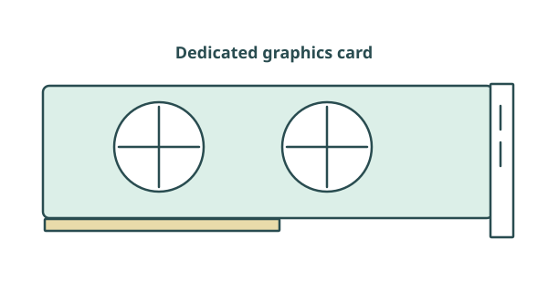
Complex models and rendering: more processing and graphics capability may help.Better specifications only matter if they meet the user’s needs. Consider the task, the rest of the system, sufficient performance, compatibility, budget, power, reliability, accessibility and practical constraints.
Start Here
From requirement to hardware choice
- Identify the task
- Find the relevant component
- Identify the useful specification
- Decide what is sufficient
- Check constraints
- Recommend and justify
Need first
A user works with many large applications at once. Investigate RAM capacity and the software workload.
Evidence next
Compare realistic workloads and compatibility, then explain how the choice benefits this user.
Part 1 · Inside the computer
Part 1 — Inside the computer
How components work, what their specifications mean, and how they fit together.
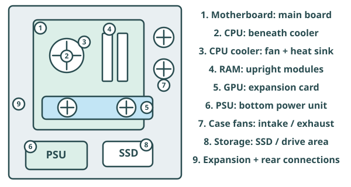
Use this map to locate the components. Each part must work with the others.
Demonstration prompt
Use the open PC to identify the main components. Return to this map as you introduce each part.
Part 1 · Inside the computer
Motherboard: the system’s connection point
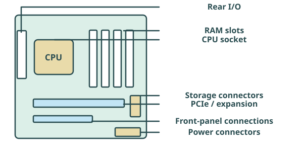
The main circuit board connects components through sockets, slots and connectors. It allows communication and sets many compatibility limits.
Demonstration prompt
Point out the CPU socket, RAM slots, expansion area and rear I/O on the physical motherboard.
Part 1 · Inside the computer
Motherboard specifications and compatibility
Fictional specification
Board A
- Socket A · supported CPU list
- DDR4 · 4 RAM slots
- Micro-ATX · PCIe expansion
- Storage connectors · rear USB/display ports
Check before choosing
CPU socket and supported model/firmware; RAM generation, slots and supported capacity; expansion slots, ports and storage connections; board form factor.
A faster CPU is useless here if it does not match the socket. Even matching sockets do not guarantee support: check the board’s supported CPU list.
Part 1 · Inside the computer
CPU: what it actually does

Central Processing Unit
Executes instructions, performs calculations and logical operations, and coordinates processing.
Workload matters
Office software, compiling programs, games, rendering, video encoding and server requests place different demands on a CPU.
Part 1 · Inside the computer
CPU clock speed
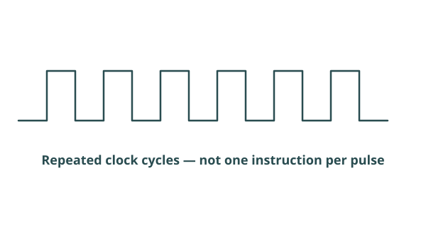
Fictional specification
CPU A
- 6 cores / 12 threads
- Up to 4.5 GHz boost
- 24 MB cache
Read the unit
GHz means billions of clock cycles per second. 4.5 GHz means 4.5 billion cycles per second, not 4.5 billion instructions.
Make a fair comparison
Higher clock speed can help within comparable designs. Architecture, core count, cache and workload also affect performance. Boost speeds depend on operating conditions.
Bigger GHz ≠ always faster CPU. Compare the actual task, not one headline number.
Part 1 · Inside the computer
CPU cores
More physical processing resources
A CPU can contain several cores. Independent work can run at the same time when the software supports it.
When extra cores help
Rendering, encoding, compiling, multitasking and server workloads may benefit. A task that cannot split its work may gain little.
Part 1 · Inside the computer
CPU threads
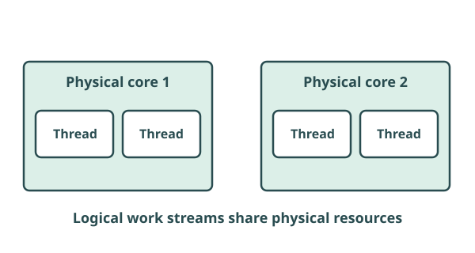
Core
A physical processing resource inside the CPU.
Thread
A stream of work. A CPU’s advertised thread count describes logical processing contexts; it may exceed its physical core count.
“6 cores / 12 threads” does not mean 12 physical cores or twice the performance. Logical threads share physical resources.
Part 1 · Inside the computer
Why CPU cache exists
- CPU needs data
- Cache: very fast, close by
- RAM: larger working area
- Storage: long-term data
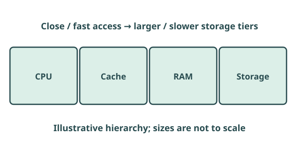
Keeping frequently or recently needed data in cache reduces some waits for RAM. CPUs may have several cache levels; more cache alone does not guarantee a faster system. This is a performance hierarchy, not an instruction-cycle diagram.
Part 1 · Inside the computer
CPU heat and sustained performance
- Processing load
- Power use
- Heat produced
- Cooling removes heat
Short burst versus sustained work
A CPU may briefly boost its speed but needs adequate cooling to maintain performance during a long render.
Thermal throttling
The processor reduces performance to limit temperature. Inadequate cooling can also cause instability, shutdowns or reduced reliability.
Part 1 · Inside the computer
How CPU cooling works
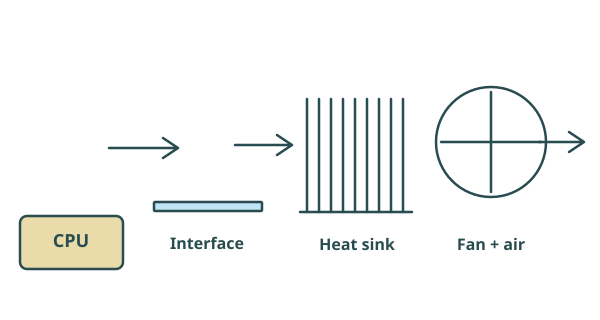
- CPU produces heat
- Thermal interface fills tiny gaps
- Heat sink spreads heat
- Fan moves air
- Case airflow carries heat away
Thermal paste helps contact between surfaces; it is not a cooling fan or a source of cold air.
Demonstration prompt
Identify the CPU cooler, heat-sink fins and fan. Explain the thin thermal interface without needing to remove the cooler.
Part 1 · Inside the computer
Case airflow and system cooling
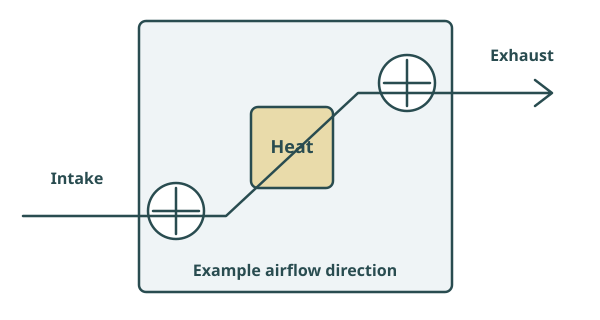
Clear air paths
Intake fans bring air in; exhaust fans carry warmed air out. Dust or blocked vents can restrict cooling.
Trade-offs
Fan speed and placement affect cooling and noise. Liquid cooling transfers heat to a radiator, which still needs airflow.
Sustained performance depends on keeping the whole system within safe operating temperatures.
Demonstration prompt
Trace intake and exhaust airflow on the case. Identify possible obstructions and discuss noise.
Part 1 · Inside the computer
RAM: the active working area

Role recap
RAM holds active programs and data. It is volatile and faster to access than long-term storage.
Read four things
Capacity, transfer speed, memory channels and compatibility determine whether a memory choice suits the system.
Part 1 · Inside the computer
RAM capacity
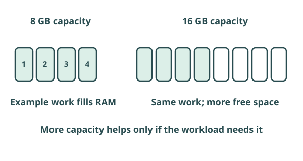
Fictional specification
Example capacities
- 8 GB · 16 GB · 32 GB · 64 GB
Too little
Larger projects and multiple applications use more memory. Insufficient RAM can increase reliance on slower storage.
Enough is the aim
Extra unused capacity does not automatically make processing faster. A 64 GB kit may add no benefit to an office workload that stays comfortably within 8–16 GB.
Part 1 · Inside the computer
RAM speed and bandwidth
Fictional specification
Memory kit A
- 16 GB total
- DDR5
- 5600 MT/s
What does MT/s mean?
Millions of transfers per second. A higher supported transfer rate can increase memory bandwidth: the amount of data moved per second.
Will the user notice?
The CPU, motherboard, configuration and workload affect the result. A higher advertised rate is not a guaranteed overall speed increase.
MT/s describes transfers, not capacity. A 16 GB kit remains 16 GB at different transfer rates.
Part 1 · Inside the computer
Memory channels
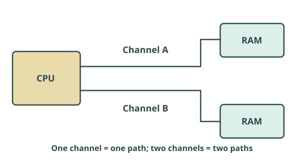
Appropriately installed modules can use two memory channels and increase available bandwidth. Two modules do not guarantee correct channel use: follow the motherboard’s slot layout.
One channel
One path carries memory transfers.
Two channels
Two paths can carry more data; application performance does not necessarily double.
Demonstration prompt
Show the paired RAM slots and use the motherboard labels/manual to identify the recommended pair.
Part 1 · Inside the computer
RAM compatibility
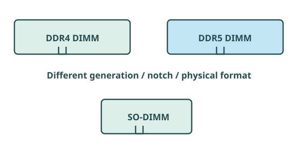
Generation and physical format
DDR5 does not fit a DDR4 motherboard. Desktop DIMMs and smaller SO-DIMMs are different physical formats.
Supported configuration
Check supported speed, total capacity, capacity per module and free slots. Board and CPU limits both matter.
Demonstration prompt
Show a RAM DIMM and its notch. Compare its length and connector position with a SO-DIMM image.
Part 1 · Inside the computer
CPU versus GPU
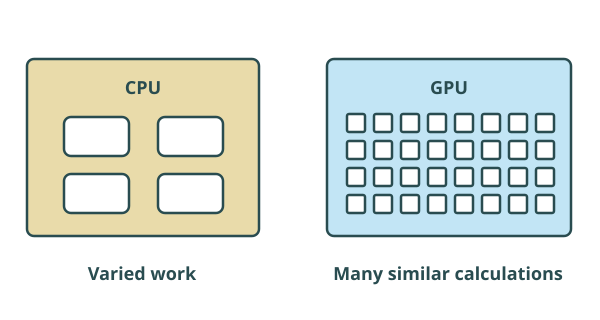
CPU
General-purpose processing, with relatively few powerful cores suited to varied work and control.
GPU
Many parallel processing resources for similar calculations. Useful for graphics and supported parallel workloads.
Part 1 · Inside the computer
Integrated versus dedicated graphics
Integrated graphics
Built into a CPU/SoC or closely integrated system. Often shares RAM; usually lower cost and power. Often sufficient for office work.
Dedicated graphics
Separate processor and usually dedicated VRAM. Can provide much greater capability, with extra cost, power use and heat.
Capabilities vary by model. A low-end dedicated card is not automatically better than every integrated GPU.
Demonstration prompt
Show the dedicated GPU and its PCIe slot, if fitted. Locate the graphics outputs.
Part 1 · Inside the computer
GPU specifications and VRAM
Fictional specification
Graphics card G
- 8 GB VRAM
- HDMI + DisplayPort outputs
- 250 mm long · 2 slots
- Power connector and cooling required
VRAM
Dedicated working memory for graphics data such as textures and frame buffers. Capacity needs depend on projects, resolution and software.
Whole-card capability
Compare model capability, supported applications, display outputs, power, size and cooling. Clock speed or processing-unit count alone is not a fair cross-model comparison.
Gaming, 3D design, rendering, video editing, simulation and supported AI work may benefit. Check that the application can use the GPU.
Part 1 · Inside the computer
PSU: supplying the system
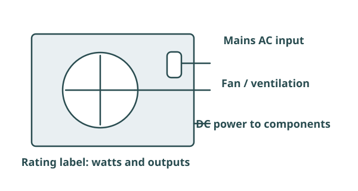
Power Supply Unit: converts mains AC into suitable DC voltages and supplies the computer’s components.
Demonstration prompt
Point out the PSU label and external connectors. Trace cables to the motherboard and GPU.
Part 1 · Inside the computer
PSU wattage
Fictional specification
Power supply P
- 500 W rated output
- Suitable connectors
- Capacity for the complete system
Capacity, not constant demand
A 1000 W PSU does not make the computer constantly consume 1000 W. Actual demand changes with components and workload.
Leave sensible headroom
Allow for peak demand and planned upgrades. A powerful GPU can change requirements considerably; use component guidance for the whole system.
Part 1 · Inside the computer
PSU efficiency and connectors
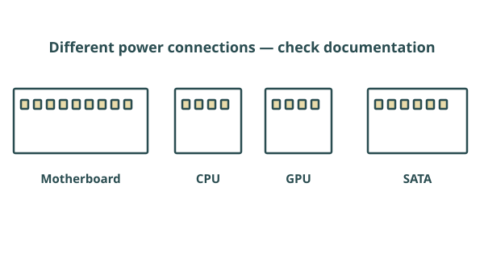
Useful output and waste
Some input energy becomes waste heat. Greater efficiency reduces waste at a given output. For example, 400 W useful output at 80% efficiency needs 500 W input.
Check the cables
Motherboard, CPU, GPU and SATA power connectors have different jobs. Similar-looking plugs are not necessarily interchangeable; follow the component and PSU documentation.
Efficiency is different from wattage capacity. Connector compatibility matters as much as a large rating.
Demonstration prompt
Identify motherboard, CPU, graphics and SATA power connections on the demonstration system.
Part 1 · Inside the computer
Case size, airflow and physical fit
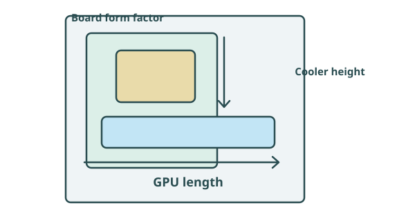
Measure the fit
Check motherboard form factor, GPU length/thickness, cooler height and available fan positions.
Plan access
Leave airflow paths, cable space, service access and room for intended upgrades.
Components can be electrically compatible but physically unsuitable for the chosen case.
Demonstration prompt
Compare GPU clearance and cooler height with the case space. Identify cable and service-access constraints.
Part 1 · Inside the computer
A computer is a system
- Task demands work
- Components share the workload
- A limiting component holds progress back
Performance bottlenecks
A weak CPU may limit a powerful GPU in a particular game. Extra RAM cannot fix slow CPU-bound calculations.
Operating limits
Insufficient cooling can reduce sustained performance. An inadequate PSU can make a build unsuitable or unstable; it is not simply a small performance penalty.
The limiting factor changes with the task. Balance processing, memory, graphics, cooling and power.
Part 1 · Inside the computer
Storage performance recap
Responsiveness
 An SSD often improves loading and responsiveness compared with an HDD.
An SSD often improves loading and responsiveness compared with an HDD.
Capacity and suitability
Keep enough room for applications, files and growth. A higher-capacity HDD may suit economical bulk storage.
Review input, output and storage devices for the storage technologies. Here, storage is one part of a complete recommendation.
Part 2 · Hardware choice
Part 2 — Beyond the PC
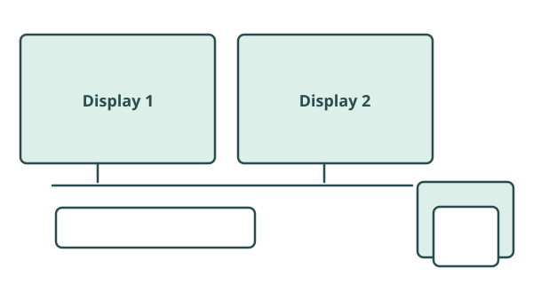
Displays, printers, connectivity and choosing complete systems.
- Interpret specifications
- Match them to the user
- Check practical constraints
- Make a justified recommendation
Part 2 · Displays
What makes a display suitable?

Different users
Office work, games, design, presentations and accessibility needs lead to different priorities.
Look beyond size
Compare resolution, refresh rate, response time, brightness, contrast, colour accuracy and ergonomic adjustment.
Part 2 · Displays
Display resolution
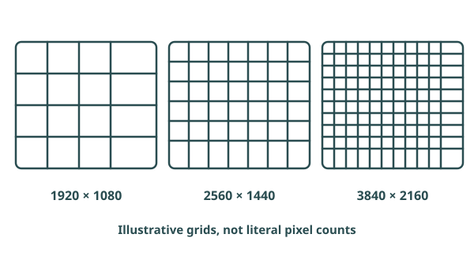
Fictional specification
Common pixel counts
- 1920 × 1080
- 2560 × 1440
- 3840 × 2160
Detail and workload
Resolution is the number of image pixels horizontally and vertically. More pixels can show more detail, but rendering at higher resolution can demand more GPU work.
Consider screen size, viewing distance and readable scaling. More pixels do not automatically make text easier to read.
Part 2 · Displays
Refresh rate
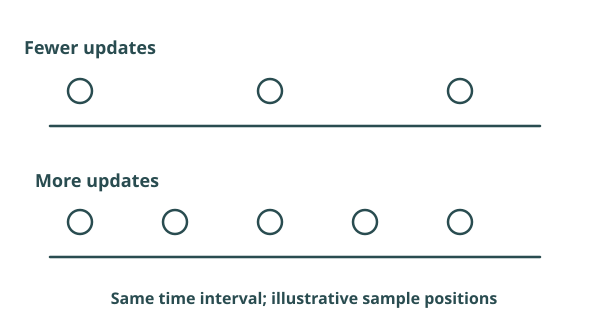
Fictional specification
Refresh examples
- 60 Hz · 120 Hz · 144 Hz
Updates per second
Hz measures screen refreshes per second. Higher refresh rates can show smoother fast motion when the system produces enough frames.
A high-refresh display does not force the GPU to produce that many frames. Ordinary office tasks may gain little from very high refresh rates.
Part 2 · Displays
Response time
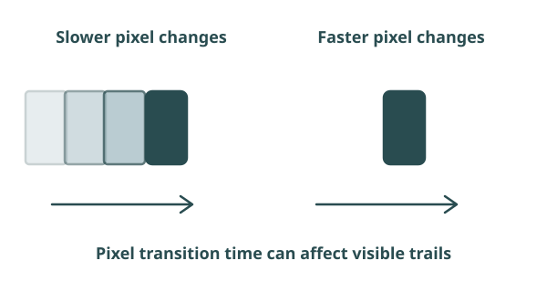
Pixel changes
Response time measures how quickly pixels change state, usually in milliseconds. Slow transitions can contribute to ghosting or blur.
Different from refresh rate
Refresh rate measures updates per second; response time measures pixel transitions. Measurement methods and settings affect quoted figures.
144 Hz and 1 ms describe different things. Neither number alone describes the complete display experience.
Part 2 · Displays
Brightness, contrast and colour
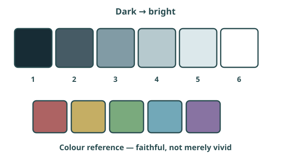
Brightness
Light output, often in cd/m² (nits). Match it to room lighting and comfortable visibility.
Contrast
Difference between darker and brighter areas; helps distinguish detail.
Colour accuracy
Faithful colour matters for photography, design and video editing. Judge the display and its calibration, not just vivid-looking colours.
Part 2 · Displays
Choosing a display
Office worker
Readable resolution and size, ergonomic adjustment and perhaps dual monitors for documents and spreadsheets.
Competitive gamer
Higher refresh, fast pixel response and a resolution the GPU can sustain in the chosen games.
Photographer/designer
Detail, colour accuracy and suitable brightness/contrast for visual decisions.
Fictional specification
Display M
- 27 inch · 2560 × 1440
- 144 Hz · advertised 1 ms
- Check outputs, adjustments and colour performance
User need → specification → recommendation. Which listed feature helps this user?
Part 2 · Printers
What makes a printer suitable?

- Type of work
- Required quality
- Speed and volume
- Running cost
A family printing photographs and a college printing thousands of text pages need different strengths.
Part 2 · Printers
Inkjet versus laser
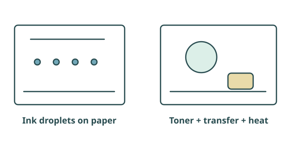
Inkjet
Sprays tiny ink droplets. Often good for colour/photos and lower initial cost; ink costs can be significant. Suitability for large workloads depends on the model.
Laser
Uses toner, electrostatic transfer and heat to fix the image. Often fast for documents and suitable for larger workloads, typically with higher initial cost.
Compare actual devices and print samples. These are common tendencies, not rules for every model.
Part 2 · Printers
Print quality: DPI
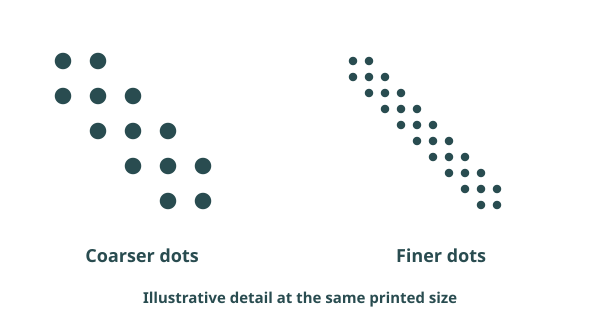
Dots per inch
DPI measures printed dot density. Higher DPI can allow finer detail.
Not the entire picture
Source-image quality, ink/toner, paper and printing technology also affect the result. Extra DPI cannot recover detail missing from the source.
Part 2 · Printers
Printer speed and first-page-out time
Fictional specification
Printer A
- 30 ppm
- First page: 6 seconds
Fictional specification
Printer B
- 40 ppm
- First page: 18 seconds
- Send job
- Wait for first page
- Remaining pages print
PPM = pages per minute. IPM = images per minute; compare test conditions, quality and duplex settings. Sustained speed matters for long jobs; first-page-out time matters when users repeatedly print one page.
Part 2 · Printers
Duty cycle: workload, not speed
Home
A few pages occasionally: modest workload capability may be sufficient.
Small office
Regular printing: choose a recommended monthly volume that fits demand.
College shared printer
High sustained demand: greater workload capability, service support and suitable consumables.
Monthly duty cycle is commonly the maximum rated monthly output, not a target for routine use. Check the lower recommended monthly page volume for sustained workloads. Neither is a pages-per-minute measure.
Part 2 · Printers
Printer running cost
- Purchase
- Ink/toner
- Drums and parts
- Paper and electricity
- Maintenance
Fictional specification
Fictional cost example A
- Purchase £100
- 10,000 pages × £0.06 = £600
- Subtotal £700
Fictional specification
Fictional cost example B
- Purchase £250
- 10,000 pages × £0.02 = £200
- Subtotal £450
These simplified subtotals exclude common paper, electricity and maintenance costs. Cheapest to buy does not necessarily mean cheapest to operate.
Part 2 · Printers
Choosing a printer
Home photography
Prioritise colour/photo quality and suitable detail. Consider an appropriate inkjet, paper and ink cost.
Busy school office
A suitable laser may offer high PPM, short first-page-out time, adequate recommended monthly volume and low running cost.
Occasional home documents
Compare low purchase cost with the cost and reliability of infrequent use. Avoid buying capacity the user will not need.
Justify a technology and specification using the workload; “buy a laser” on its own is not enough.
Part 2 · Whole-system choices
Ports and connectivity
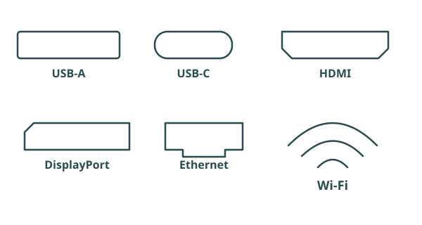
Can everything connect?
Check monitor outputs, enough USB ports, wired Ethernet where needed and Wi-Fi for mobile use.
Shape is not capability
USB-C describes a connector shape. Video, charging and data capabilities depend on the port, device and cable. Check support at both ends.
Count the required simultaneous displays and peripherals. An adapter cannot create capabilities the system does not support.
Part 2 · Whole-system choices
User needs and user experience
Start with the person
Tasks, ease of use, accessibility, reliability and performance expectations determine what is sufficient.
Start with the work
A designer needs responsive creative tools; a receptionist needs calls, appointments and readable records.
Availability and productivity
Check stock, support and delivery dates. The intended benefit must arrive in time and help users complete real work.
Part 2 · Whole-system choices
Powerful but incompatible?
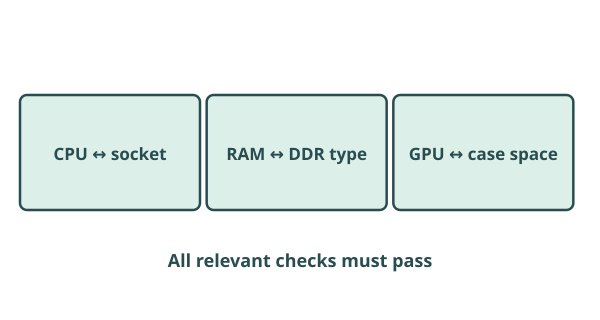
Inside the case
Check CPU socket/support, RAM generation, PSU connections and case/cooler/GPU dimensions.
Across the system
Check display connections, software requirements, operating-system support and peripheral drivers.
A DDR5 kit cannot upgrade a DDR4 board. A long GPU may fit the PCIe slot but not the case. Better specifications do not fix either mismatch.
Part 2 · Whole-system choices
Cost and efficiency
Upfront cost
Hardware, installation, cables and any required licences.
Lifetime cost
Electricity, consumables, maintenance, support and replacement parts.
Value
Pay for benefits the workload can use. Efficient hardware can reduce energy waste, heat and cooling demand.
Compare the total cost over the planned life, not just the sticker price.
Part 2 · Whole-system choices
Implementation and productivity
- Plan installation and timescale
- Pilot and test
- Back up and migrate
- Train and support
- Check real productivity
Benefits
Faster opening, rendering or printing can reduce repeated waiting.
Disruption
Installation, staff training, migration and downtime cost time. Test applications, peripherals and accessibility tools before a full rollout.
Availability affects delivery; implementation affects when staff can actually use the new equipment.
Part 2 · Whole-system choices
Security and accessibility
Security and reliability
Consider physical security, supported security features, appropriate access peripherals and resilience of shared systems. A feature must also be configured and supported.
Accessible work
Choose readable displays, suitable input devices and assistive output where needed. Test the complete setup with the user.
Hardware should enable secure, usable work. Revisit the assistive input/output examples if needed.
Part 2 · Whole-system choices
How to justify a hardware recommendation
- Need
- Hardware feature
- Specification
- Benefit
- Constraint
- Recommendation
Weak
“Buy a better GPU.”
Strong
“The video-editing software supports GPU acceleration. A suitable dedicated GPU with enough VRAM can improve playback and rendering for large projects, but the budget must also cover compatible power and cooling.”
Explain when the feature helps, what limits it, and why your final choice is proportionate.
Part 2 · Whole-system choices
Worked example: college media workstation
Photoshop, video editing, several active applications and dual monitors. Fictional budget: £1,200; existing software licences and classroom network are available.
Processing and memory
Choose a mid-range multicore CPU (£170) and 32 GB RAM (£80) for supported rendering and active creative applications.
Graphics and displays
A suitable 8 GB dedicated GPU (£230) supports accelerated work; two compatible 1440p displays (£300) provide working space. Check colour accuracy for photo decisions.
Platform and power
A compatible board (£75), appropriately specified PSU (£75), and case/cooling/peripherals (£100) complete the platform.
Storage and judgement
Allow £80 for a suitable SSD. Total: £1,110, leaving £90. If project requirements exceed the GPU or display capabilities, change the allocation rather than blindly choosing the highest CPU tier.
Confirm CPU support, RAM type, GPU length, PSU connectors and dual-display outputs. Prices are teaching examples, not a current shopping list.
Part 2 · Whole-system choices
Build the right system
Meet the user’s requirements within the budget. All products and prices are fictional classroom examples.
Exam Traps
Common exam mistakes
Bigger number = better
GHz, RAM capacity, PSU watts and display resolution only help in context.
Ignoring compatibility
Check both electrical support and physical fit.
Unnecessary hardware
A high-end GPU may add little to word processing.
Specifications without benefits
Explain why 32 GB could suit large active video projects, not just that it is “better”.
Ignoring trade-offs
Higher capability may increase cost, power, heat and cooling needs.
One part is not the system
A balanced recommendation considers the whole workload and rollout.
Quiz
Check your understanding
Answer all 16 questions. Your answers and best score save in this browser.
Apply Your Knowledge
Exam-style practice
Write a justified answer, then compare it with the guide. Drafts save automatically on this device.
Question 1
A small business wants to upgrade office computers used for documents, spreadsheets and video calls. Discuss the factors affecting hardware choice.
Show answer guide
- Start with tasks and sufficient performance, rather than premium gaming hardware.
- Check software, peripherals and component compatibility.
- Balance purchase and running costs against user experience and productivity.
- Explain availability, testing, migration and disruption; consider accessibility and security.
Question 2
Analyse whether a high-refresh-rate 4K monitor is appropriate for an office administrator.
Show answer guide
- 4K can provide detail or workspace at a suitable size and readable scaling.
- High refresh may provide limited productivity benefit for documents compared with fast-motion gaming.
- Consider cost, display connections, graphics support and power; distinguish desktop display support from demanding 4K game rendering.
- Compare a lower-cost readable display or dual monitors and reach a scenario-based judgement.
Question 3
A college media student has £1,200 for a workstation for 3D design, video editing and several active applications. They need dual monitors; software licences are already available. Recommend a complete system using the fictional options above, and evaluate its trade-offs.
Show answer guide
- Link CPU capability, sufficient RAM and supported GPU acceleration/VRAM to actual tasks.
- Include displays, storage, compatible motherboard, case/cooling and a suitable PSU.
- Show a budget total and explain what is included; compare at least one credible alternative.
- Address software support, outputs, physical fit, energy/cooling and implementation/testing.
- Reach a justified recommendation. Credit accurate technical explanation, application and trade-offs, not a list of large numbers.